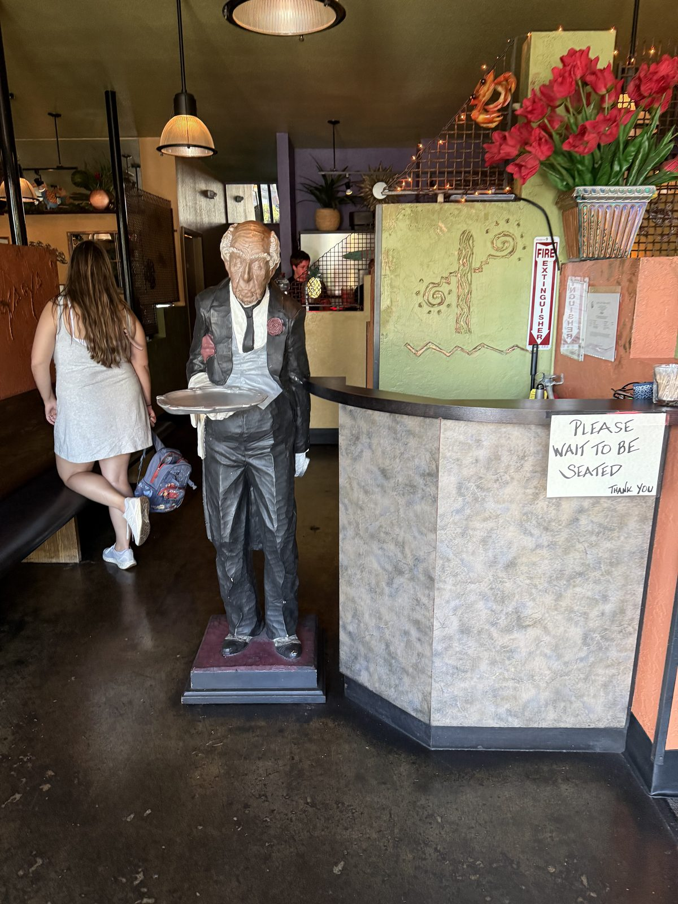
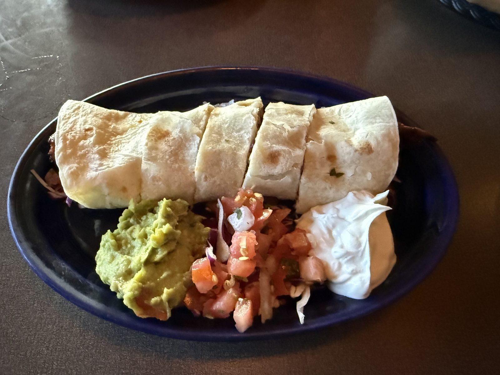
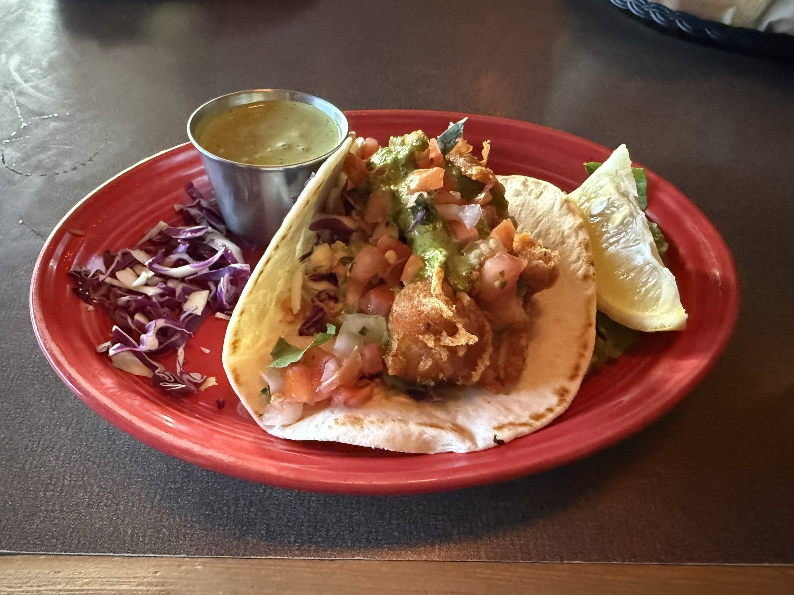

The Sandy Sauce at Cactus Ya Ya

Last stop, a quarter past five on a Sunday evening, and this one isn't a discovery — it's a return trip to a place I already know. Cactus Ya Ya has been sitting on the corner of SE Mill Plain in east Vancouver since 1994, which by the standards of a restaurant scene that turns over every few years makes it something close to a landmark. I don't live around the corner from it. I have, on more than one Sunday night, driven twenty to twenty-five minutes specifically to be here for happy hour, which should tell you most of what you need to know before I even get to the food.


Tonight's order
A steak yaya roll and a fried fish taco, split across the table. The roll came properly griddled — good color on the tortilla, steak and melted cheese visible at every fold — with guacamole, fresh pico de gallo, and sour cream served alongside rather than buried inside it, which is the right call; it lets you control how much of each goes into every bite instead of the kitchen deciding for you. The fish taco was battered and fried rather than grilled, sitting on a warm tortilla with purple cabbage slaw, more pico, a swipe of what tasted like an avocado crema, and a lime wedge, next to a small cup of a bright green sauce I kept going back to for more than just the fish. All around delicious — five out of five, and not a close call.

The real reason to come at happy hour
Here's the thing worth writing down, because it's the actual case for this place rather than tonight's plates alone: Cactus Ya Ya's happy hour burger, topped with Swiss cheese, is one of the best burgers in the area — and the reason isn't the beef, it's a condiment most people walk right past on the bar menu without asking about. Ask for what regulars here just call the sandy sauce. It's the actual secret to the burger, the thing that pulls the whole plate together in a way a straight burger with Swiss and nothing else never quite does. I would not order this burger without it, and I'm not sure the kitchen expects most people to know to ask.
The steak yaya roll above is itself a happy hour order, and the move to ask for is habanero sauce on the side instead of the standard version — a spicier plate than the name lets on, and the better version of the dish for it. Both the roll and the burger live on the handwritten bar menu that only runs during the 2–6 window daily, the same laminated card that's been propped on tables here for what looks like years judging by the handwriting.
What the regulars actually order
The printed menu runs wider than the roll-and-taco corner I usually stay in — a proper appetizer list (Nacho Beans at $6.95 loaded with jack and cheddar, jalapeños, olives and guacamole; Baja beer-batter tiger prawns; fried oysters in seasoned breadcrumbs with a jalapeño tartar; the jalapeño "peppers" stuffed with cheddar and jalapeño jelly), a full run of fajitas, and enough seafood and yaya-roll variations to make a second visit look nothing like the first. Steak is only one filling among several — ask around and the same handful of dishes come up over and over: the Peanut Chicken Yaya Rolls, which show up in more reviews than almost anything else on the menu; the Shanghai Burrito, stir-fried vegetables and rice in peanut and roasted red pepper sauces rather than anything you'd call traditionally Mexican; and the halibut and Baja fish tacos, crispy halibut with red cabbage and guacamole, which by local reputation pull people across the river from Oregon on their own. The pan-fried oysters get the same kind of loyalty. And more than one regular will tell you the margaritas — the "Nuclear" version especially — are the best in town, which tracks with a restaurant that treats its bar program as seriously as its kitchen.
None of that is what we ordered tonight, and none of it needs to be — the point is that this is a menu with real depth behind the happy hour corner most people (myself included, most nights) never leave. There's also a patio with a fire pit for anyone who wants to make an evening of it rather than just a dinner.
The Rettigs
Jim and Cheryl Rettig opened Cactus Ya Ya in 1994 — Cheryl grew up in nearby Camas, Jim came from central Illinois, and the two met managing a lodge in Alaska before settling in Vancouver to run a restaurant together. In 2003 they bought the entire corner the building sits on, which is not the move of an owner planning to flip the place in five years. Three decades later it's still exactly what a neighborhood restaurant is supposed to be: a bar that fills up for happy hour, a patio that's comfortable on a warm evening, and a kitchen that's been making the same handful of things well for long enough that regulars know to ask for the sauce that isn't on the printed description.
The practical bit
Cactus Ya Ya — 15704 SE Mill Plain Blvd, Vancouver, Washington 98684. 📍 Get directions
Hours (from the door): Monday 4–10, Tuesday–Thursday noon–10, Friday–Saturday noon–11, Sunday 4–9.
Happy hour: daily, roughly 3–6 PM and again from 9 PM to close.
Order this: the happy hour burger with Swiss, and ask for the sandy sauce even if it isn't listed with the dish. The steak yaya roll, with habanero on the side instead of the standard sauce.